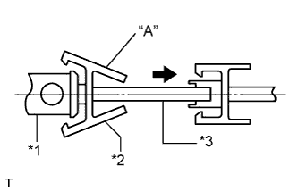
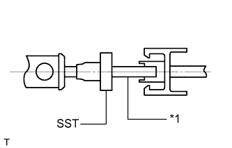
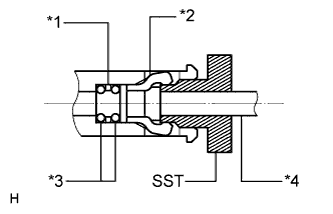
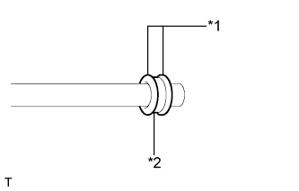
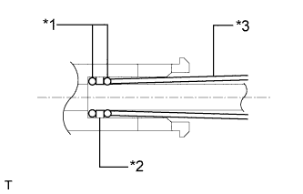
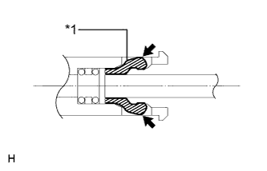
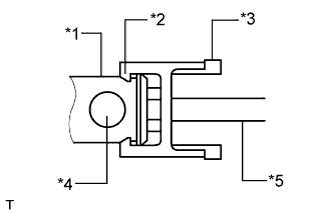
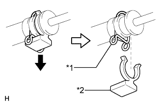
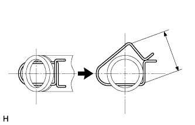
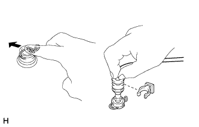

СИСТЕМА УПРАВЛЕНИЯ ПОДВЕСКОЙ (для моделей с пневматической подвеской) > МЕРЫ ПРЕДОСТОРОЖНОСТИ |
| 1.ПРИ ПОДЪЕМЕ АВТОМОБИЛЯ |
Перед поддомкрачиванием или подъемом автомобиля отключите систему управления пневматической подвески нажатием выключателя отключения регулировки высоты.
| 2.ОТСОЕДИНЕНИЕ И ПОДСОЕДИНЕНИЕ ТРУБКИ РЕГУЛИРОВКИ ВЫСОТЫ (ДЛЯ ТИПА 1) |
Отсоедините трубку регулировки высоты подвески.
|  |
Сожмите часть A соединителя № 1 и вытяните соединитель из корпуса.
| *1 | Корпус |
| *2 | Разъем № 1 |
| *3 | Воздушная трубка |
|  |
Установите SST на трубку.
| *1 | Воздушная трубка |
|  |
Вставьте SST в корпус, чтобы раскрыть захват соединителя № 2 в корпусе.
| *1 | Пластина |
| *2 | Разъем № 2 |
| *3 | Кольцевое уплотнение |
| *4 | Воздушная трубка |
Вытяните трубку вместе со вставленным SST.
Вставьте отвертку в круглое отверстие в корпусе и снимите с корпуса соединитель № 2, 2 кольцевых уплотнения и шайбу.
|  |
Установите 2 кольцевых уплотнения и шайбу.
| *1 | Кольцевое уплотнение |
| *2 | Пластина |
Нанесите универсальную консистентную смазку № 2 на 2 новых кольцевых уплотнения и шайбу, а затем наденьте их на прямую трубку или аналогичное приспособление.
|  |
Вставьте трубку вместе с 2 кольцевыми уплотнениями и шайбой в корпус, а затем без усилия продвиньте шайбу и уплотнения внутрь с помощью куска свернутого картона.
| *1 | Кольцевое уплотнение |
| *2 | Пластина |
| *3 | Картон |
|  |
Вставьте соединитель № 2 в корпус до щелчка.
| *1 | Разъем № 2 |
|  |
Установите трубку регулировки высоты подвески на место.
| *1 | Корпус |
| *2 | Захват |
| *3 | Разъем № 1 |
| *4 | Канал (отверстие) |
| *5 | Воздушная трубка |
Вставьте трубку и соединитель № 1 в корпус до щелчка.
| 3.ОТСОЕДИНЕНИЕ И ПОДСОЕДИНЕНИЕ ТРУБКИ РЕГУЛИРОВКИ ВЫСОТЫ (ДЛЯ ТИПА 2) |
|  |
Отсоедините трубку регулировки высоты подвески.
| *1 | Фиксатор |
| *2 | Держатель |
Снимите держатель.
|  |
Расширьте фиксатор и медленно вытяните трубку регулировки высоты подвески, не наклоняя ее.
Снимите кольцевое уплотнение.
|  |
Установите трубку регулировки высоты подвески на место.
В случае замены фиксатора:
Зацепите одну сторону нового фиксатора за канавку штуцера и вставьте другую сторону в противоположную часть канавки штуцера.
При использовании прежнего фиксатора:
Установите на трубку регулировки высоты новое кольцевое уплотнение и смажьте его универсальной консистентной смазкой № 2.
Плотно вставьте трубку регулировки высоты в соединитель до щелчка, не допуская наклона трубки.
Установите держатель на трубку регулировки высоты, стараясь не прилагать чрезмерного усилия к фиксатору.
| 4.ПРОВЕРЬТЕ ТРУБНЫЕ СОЕДИНЕНИЯ НА УТЕЧКУ ВОЗДУХА |
Установите переключатель регулировки высоты в положение HIGH и поднимите автомобиль.
Выключите двигатель.
Нанесите мыльный раствор на трубные соединения и проверьте, нет ли утечки воздуха.